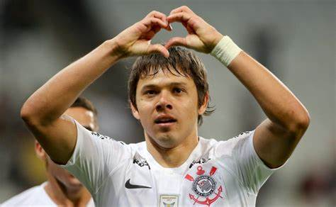
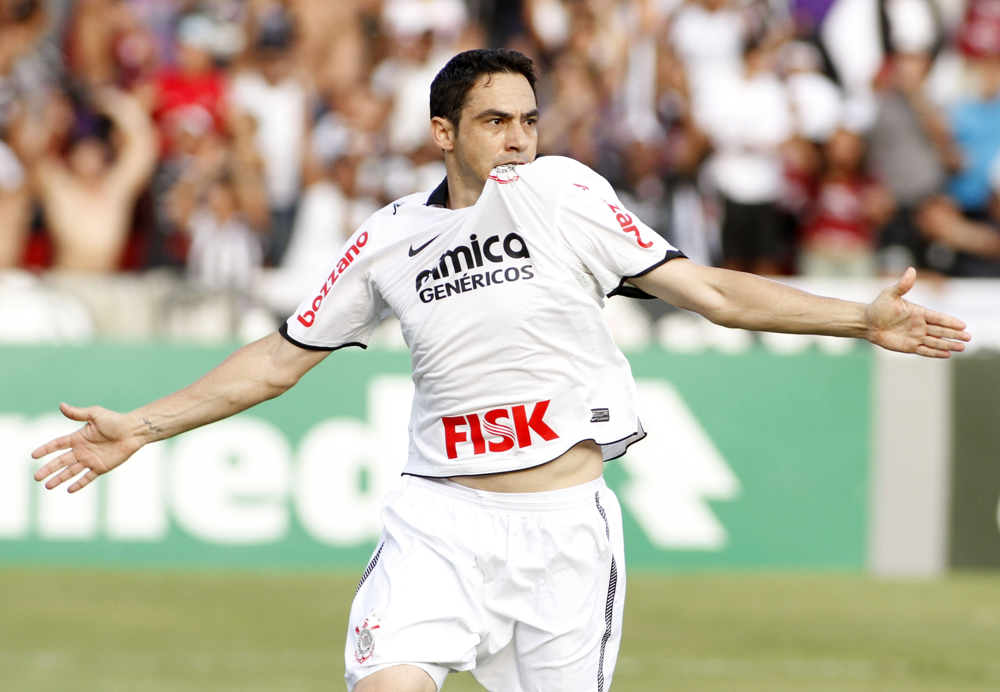
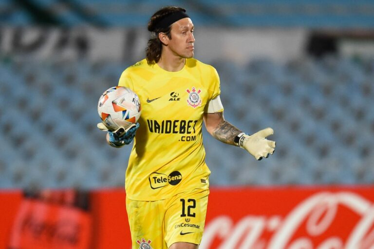

<html>

</html>

</html>

<head>

    <meta charset='utf-8'>
    <meta http-equiv='X-UA-Compatible' content='IE=edge'>
    <title>Notícias Corinthians</title>
    <meta name='viewport' content='width=device-width, initial-scale=0'>
    <meta name="keywords" content="Corinthians, Noticias, Jogador">
    <meta name="description" content="O Corinthians é um time de futebol">
    <link rel='stylesheet' href='css/estilos.css'>
    <link rel='stylesheet' href='css/teste.css'>
    <link rel="shortcut icon" type="imagex/png" href="./img/logo.png">
    

</head>

<body>
    <div class="container">
        <div class="header">
            <div class="title-div">
                
                <h1 class="titlep">Corinthians</h1>
            </div>
        </div>
        <div class="nav">
            <a class="h2-navegacao" href="home.html">Home</a>
            <a class="h2-navegacao" href="index.html">Notícias</a>
            <a class="h2-navegacao" href="qualquer.html">História</a>
            <a class="h2-navegacao" href="elenco.html">Elenco(Cards)</a>
            <a class="h2-navegacao" href="camisas.html">Camisas</a>
            <a class="h2-navegacao" href="artilheiros.html">Artilheiros</a>
            <a class="h2-navegacao active" href="teste.html">ídolos</a>
        </div>
        <div class="content-idols" id="imagemidols">
            <div class="div1-idols">
                <h1 class="titulo-idolos" id="nomejogador">Ángel Romero</h1>
                <p class="text-idols" id="textidolos">Angel Romero é um jogador paraguaio que se destacou no Corinthians durante sua passagem pelo clube,
                    entre 2014 e 2020. Ele se tornou uma peça importante do elenco, conhecido por sua habilidade,
                    velocidade e capacidade de marcar gols. Romero contribuiu significativamente para conquistas
                    importantes, como o Campeonato Brasileiro e a Copa do Brasil. Sua versatilidade no ataque e seu
                    empenho em campo o tornaram um ídolo para a torcida corintiana. Após sua saída, ele deixou saudades
                    e é lembrado como um dos jogadores marcantes da era recente do clube.</p>
                    <div class="div-gols">
                        <div class="gols">
                            
                            <h1 id="partidas" class="title-div" style="color: white;">309</h1>
                        </div>
                        <div class="gols">
                            
                            <h1 id="gol" class="title-div" style="color: white;">59</h1>
                        </div>
                    </div>
            </div>
        </div>

        <div class="div-buttons">
            <div class="center-cards">
                <a id="button1" class="cards" onclick="mudarButton1()" onmouseover="hoverButton1()"
                    onmouseleave="nothover()">
                    
                </a>
            </div>
            <div class="center-cards">
                <a id="button2" class="cards" onclick="mudarButton2()" onmouseover="hoverButton2()"
                    onmouseleave="nothover()">
                    
                </a>
            </div>
            <div class="center-cards">
                <a id="button3" class="cards" onclick="mudarButton3()" onmouseover="hoverButton3()"
                    onmouseleave="nothover()">
                    
                </a>
            </div>
            <div class="center-cards">
                <a id="button4" class="cards" onclick="mudarButton4()" onmouseover="hoverButton4()"
                    onmouseleave="nothover()">
                    
                </a>
            </div>
        </div>
    </div>
    <footer class="footer">
        <div class="f1">
            
        </div>
        <div class="f1" style="width: 200px;">
            <h2 class="texto-f"> Corinthians</h2>
            <h3 class="texto-f2">O Sport Club Corinthians Paulista foi fundado em 1º de setembro de 1910. O nome <br>
                acabou definido posteriormente, em homenagem ao time inglês Corinthian FC, que estava excursionando <br>
                pelo Brasil na época. Outras ideias de nome foram Santos Dumont e Carlos Gomes. <br>
            </h3>
        </div>
        <div class="f1">
            <h2 class="texto-f"> Contatos</h2>
            <h3 class="texto-f2">corinthians@outlook.com <br><br>
                (11) 99999-9999<br><br>
                Rua ############ ########<br><br>
                Bairro <br><br>
            </h3>
        </div>
        <div class="f1">
            <h2 class="texto-f"> Criadores</h2>
            <h3 class="texto-f2"> NOME 1<br><br>
                NOME 2<br><br>
                NOME 3<br><br>
                NOME 4<br><br>
            </h3>
        </div>
    </footer>

</body>

</html>
<script src="scriptbutton.js"></script>